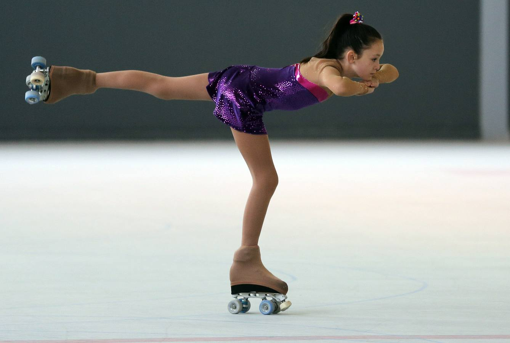

Hay una gran variedad de figuras en patin artistico, esta las figuras "paradas" y las "agachadas" algunas pueden ser:
- Garza.
- Paloma.
- Bandera.
- Indio.
- Canasta/Canasta Cruzada.
- Nudo.
- Carrito o Carrito en un pie.
- Tortuga.
- Zonja/O.
- Media zonja/Media O.
FIGURAS EN PATIN ARTISTICO
Hay una gran variedad de figuras en patin artistico, esta las figuras "paradas" y las "agachadas" algunas pueden ser:
CARRITO EN UN PIE

ZONJA / O
NUDO
BANDERA
PALOMA
CANASTA